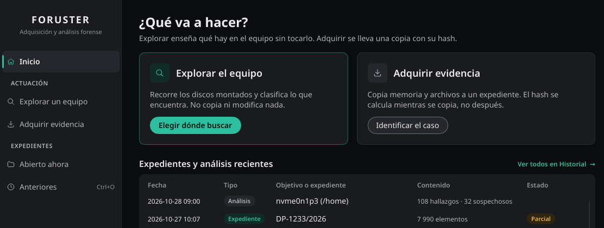

Requisitos
| Concepto | Requisito |
|---|---|
| Sistemas | Linux y Windows de 64 bits. |
| Despliegue | Foruster no se instala en el equipo intervenido: funciona desde un USB. La línea de comandos y la interfaz de terminal son, cada una, un solo ejecutable. |
| Interfaces | La aplicación gráfica y la línea de comandos adquieren, comprueban e informan. La interfaz de terminal explora el equipo; para adquirir desde una terminal se usa la línea de comandos. |
| Destino | Otro dispositivo, nunca el disco de origen. Con más espacio libre del que ocupa lo que se va a recoger: para memoria, como mínimo el tamaño de la RAM; para una imagen, el tamaño del soporte más un 1 % y 16 MiB. |
| Licencia | Solo para adquirir. Ver Licencia. |
Privilegios
Cada función necesita sus propios privilegios. Si faltan, Foruster lo indica y no presenta como completa una adquisición que no lo es.
| Función | Hace falta |
|---|---|
| Memoria física (Linux) | Root. |
| Memoria de procesos (Windows) | Sesión de administrador. |
| Imagen de volumen, disco o instantánea | Root en Linux; sesión de administrador en Windows. |
| Artefactos de Windows | Sesión de administrador. |
| Artefactos de navegador y ficheros | Permiso de lectura sobre lo que se recoge. Con root o administrador se alcanza más. |
| Comprobar, firmar, sellar, custodia, informe, acta y diagnóstico | Ninguno especial, ni licencia. |
foruster-cli preflight informa del estado del equipo y de
qué memoria puede adquirirse en él. La interfaz gráfica lo consulta
automáticamente y lo muestra en la barra lateral.
Licencia
La licencia es un fichero firmado, licencia.json. Foruster la
comprueba sin conexión: no se comunica con ningún servidor. Solo la
adquisición la exige, y la comprueba al empezar. Comprobar, registrar la
custodia, firmar, sellar, informar, redactar el acta y generar el paquete
de diagnóstico funcionan sin ella, así que un expediente se sigue
pudiendo trabajar aunque la licencia caduque.
Foruster la busca en este orden: la ruta de --license, si la
indicas; la variable FORUSTER_LICENSE;
foruster-data/licencia.json y licencia.json, junto
al ejecutable. En un kit USB, lo cómodo es dejarla en
foruster-data/.
foruster-cli licenseLa licencia y el hash SHA-256 del ejecutable quedan anotados en cada expediente al abrir la sesión.
La aplicación
Al abrirla, hay dos maneras de empezar. No hacen lo mismo, y conviene tener clara la diferencia:
| Explorar un equipo | Recorre los discos montados y clasifica lo que encuentra. No copia ni modifica nada, así que sirve para ver qué hay antes de decidir. |
|---|---|
| Adquirir evidencia | Copia memoria, ficheros o un soporte entero a un expediente, con el hash calculado durante la copia. Es lo que después sostiene un informe. |
Lo normal es explorar primero, marcar lo que interese y adquirir solo eso. Si ya sabes qué vas a adquirir, puedes ir directo a la adquisición.

Durante una adquisición, la aplicación muestra arriba en qué paso va: Identificación, Adquisición, Verificación e Informe. Son los mismos cuatro nombres que usa esta página, a propósito.
La barra lateral indica en todo momento dos condiciones que determinan qué puede hacerse: si la sesión tiene privilegios y si la memoria está al alcance. Cuando no lo está, la casilla de memoria aparece desactivada con el motivo escrito al lado, no escondida.
Los expedientes cerrados quedan en Anteriores; aquel en el que se esté trabajando, en Abierto ahora. Desde ahí se comprueba, se firma, se anota un traspaso o se generan el informe y el acta.